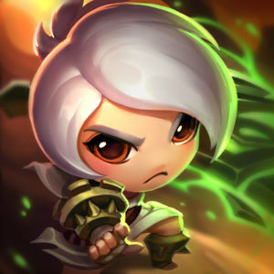

Você sabe duelar?
Coloque seu conhecimento de match-ups em prova

Pronto para a match-up?
Responda as questões e fortifique seus conhecimentos.
questões
4 alternativas
Sem tempo limite
Quiz concluído!
Quantidade de acertos: 0
Quantidade de erros: 0
Pontuação Final:
***
***
Questão atual: de
questões.
Escolha uma opção dentre as abaixo: